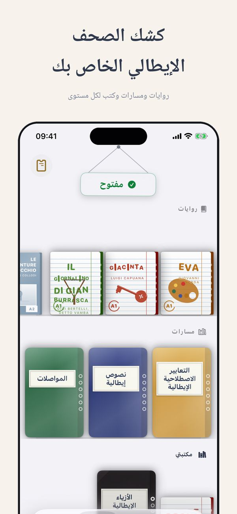
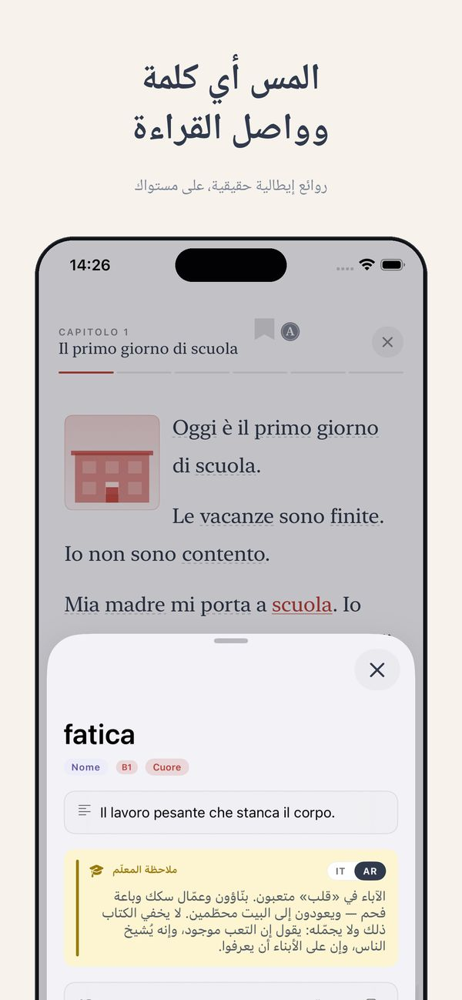
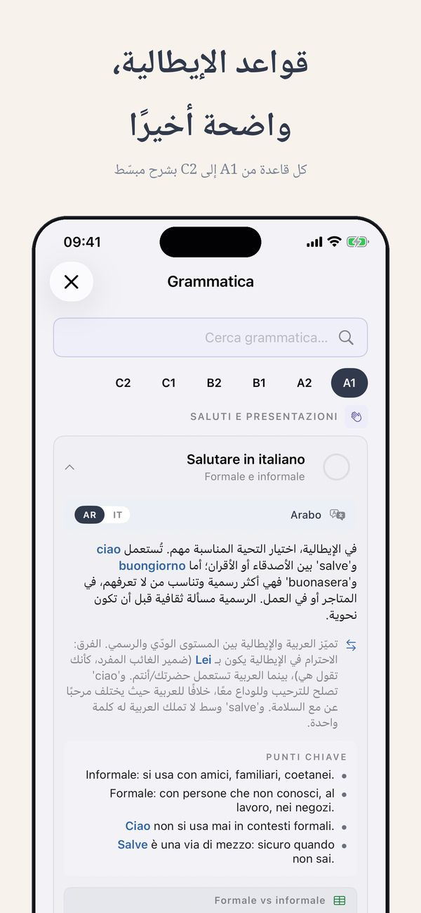
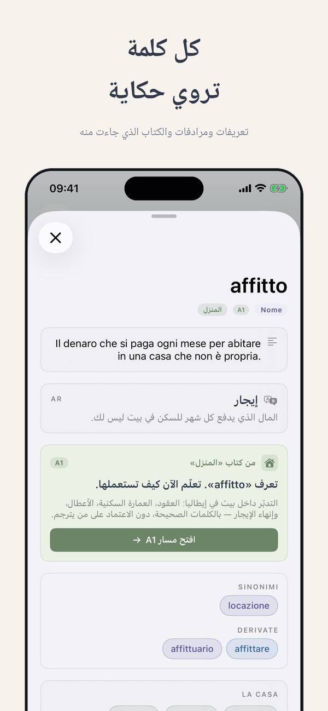
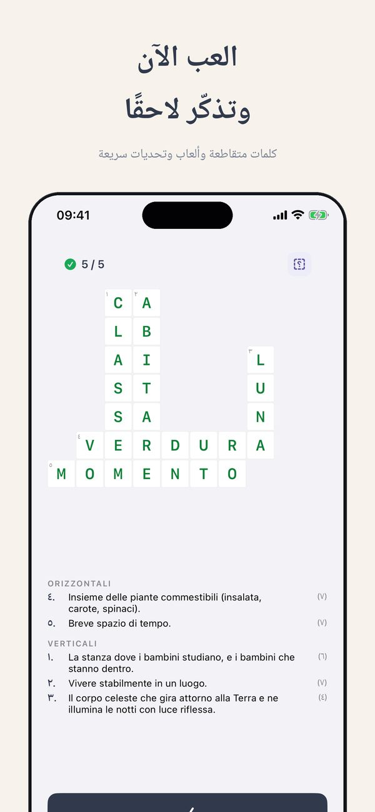

اختبار مستوى مجاني · Thuis Italiaans
ما مستواك في الإيطالية؟
“مستوى متوسط” قد يعني خمسة أشياء مختلفة. إليك كيف تحصل على جواب حقيقي على سلم A1-C2: فحص ذاتي في دقيقتين، ثم اختبار مجاني يقيس المهارات الأربع كلاً على حدة.
مجاني، حوالي 15 دقيقة، النتيجة فوراً
ابدأ اختبار المستوىماذا تعني المستويات من A1 إلى C2
اسأل خمسة أشخاص ما معنى “إيطالية متوسطة” وستحصل على خمسة أجوبة. لهذا اتفقت أوروبا على سلم موحد اسمه CEFR، بستة مستويات من A1 إلى C2. الجامعات وأصحاب العمل وامتحان الجنسية يستعملونه كلهم. بسطر واحد لكل مستوى:
- A1: تتدبر أمرك في طلب قهوة وتقديم نفسك.
- A2: تتعامل مع كل المواقف المتوقعة: التسوق، المواعيد، حديث عن يومك.
- B1: تدير محادثة حقيقية، حتى لو خرجت عن المألوف.
- B2: تعمل بالإيطالية وتشاهد التلفزيون دون معاناة.
- C1: تميز الأساليب والتعابير، وينفتح لك الأدب.
- C2: قريب من ابن اللغة، تفهم النكات.
إذن السؤال الحقيقي ليس “هل مستواي متوسط؟” بل “أين أنا على هذا السلم، مهارة بمهارة؟”
الفحص الذاتي في دقيقتين
قبل أي اختبار، جرب هذه القائمة الصريحة. ابحث عن آخر جملة صحيحة بالنسبة لك:
- أستطيع طلب وجبة وفهم رد النادل: أنت على الأقل في منطقة A2.
- أستطيع الحديث عن عملي عشر دقائق ويفهمني الناس: حوالي B1.
- أستطيع متابعة فيلم دون ترجمة في معظم المشاهد: حوالي B2.
- أستطيع الدفاع عن رأي وأشعر بالفرق بين الإيطالية الرسمية وغير الرسمية: حوالي C1.
مفيد، لكنه تقريبي، وفيه انحياز معروف: نحكم على أنفسنا بأفضل مهارة عندنا. وهنا نصل إلى المشكلة الحقيقية.
مهاراتك الأربع ليست في المستوى نفسه
لا أحد تقريباً “مستواه B1”. أنت B1 في القراءة، A2 في الاستماع، A2 في الكلام، وB1 في الكتابة، أو مزيج آخر. القراءة عادة تسبق بمستوى، لأنك أنت من يتحكم بالسرعة. الاستماع والكلام يتأخران، لأن الإيطاليين الحقيقيين لا يبطئون من أجلك. التصنيف الواحد يخفي بالضبط المعلومة التي تحتاجها: أي مهارة عليك أن تدرب.
لهذا اختبار المستوى المجاني عندي يقيس المهارات الأربع كلاً على حدة. يستغرق حوالي خمس عشرة دقيقة والنتيجة تظهر فوراً: ليس حرفاً واحداً، بل ملفاً كاملاً.
خمس عشرة دقيقة، أربع مهارات، جواب واضح
مجاني، ولا جدار تسجيل قبل النتيجة. تخرج وأنت تعرف مستواك في كل مهارة ونقطة بدايتك.
مجاني، حوالي 15 دقيقة، النتيجة فوراً
ابدأ اختبار المستوىماذا يفتح لك المستوى، وماذا تفعل بعده
المستوى مفيد فقط إذا غير خطوتك التالية.
- إذا كان هدفك وثيقة: الإقامة طويلة الأمد تحتاج إثبات A2، والجنسية تحتاج مستوى موثقاً بشهادة. الاختبار المجاني يخبرك إن كنت جاهزاً لحجز الامتحان، أم أن هذا المال أنفع في ثلاثة أشهر تحضير.
- اختر مواد من مستواك. محتوى أعلى بمستوى واحد هو أسرع قاتل للحماس. ابدأ بـالتمارين المجانية وبمسار ينطلق من مستواك، كما في تطبيق Ti.
- درب المهارة المتأخرة. إذا كان الكلام متأخراً، فالمزيد من تمارين القواعد لن يحل المشكلة: أنت تحتاج أن تتكلم.
- أعد الاختبار بعد ثلاثة أشهر، لا بعد ثلاثة أسابيع. قبل ذلك، تبقى الفروق داخل هامش خطأ أي اختبار.
أسئلة شائعة
ما مدى دقة اختبار المستوى عبر الإنترنت؟
الاختبارات الجيدة تحدد موقعك بهامش نصف مستوى، وهذا يكفي لاختيار المواد ونقطة البداية. التقسيم حسب المهارة أهم من التصنيف الواحد: هو يخبرك ماذا تدرب، لا أين أنت فقط.
أقرأ بمستوى B1 لكني أتكلم بمستوى A2. ما مستواي إذن؟
الاثنان معاً، وهذا طبيعي. القراءة تسبق عادة لأنك تتحكم بالإيقاع. اقرأ مواد B1 وضع وقت التدريب كله في الكلام حتى يتعادلا.
كم مرة يستحسن إعادة الاختبار؟
كل ثلاثة أشهر على الأكثر. قبل ذلك، التغيرات أصغر من هامش خطأ الاختبار، والتكرار الكثير لا ينتج إلا الإحباط.
لا تخمن. قِس.
خمس عشرة دقيقة، المهارات الأربع كل واحدة على حدة، والنتيجة فوراً. ثم تمارين ومسار من المستوى الذي هو مستواك فعلاً.
مجاني، حوالي 15 دقيقة، النتيجة فوراً
ابدأ اختبار المستوىSee Ti in action
The CEFR path, exercises, edicola and graded Italian classics — from A1 to C2, in 14 languages.






المزيد من Thuis Italiaans
كتب مصنّفة حسب المستوى · دروس الإيطالية عبر الإنترنت · أكثر من 700 تمرين مجاني